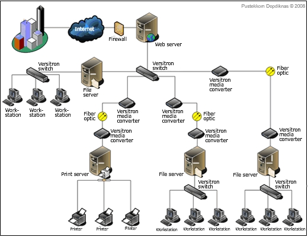
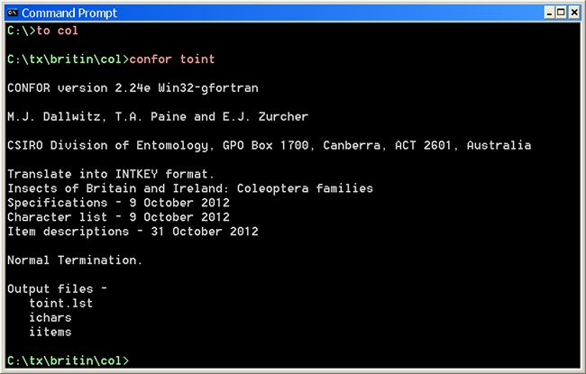

Home /pelajaran
sistem Komputer merupakan sekumpulan perangkat komputer yang saling berkaitan dan berinteraksi antara satu sama lain untuk menjalankan sebuah Proses Pengolahan Data, sehingga dapat menghasilkan suatu informasi yang sangat dibutuhkan oleh penggunanya. Perangkat-perangkat yang terdapat didalam sebuah Sistem Komputer yaitu terdiri dari Hardware, Software dan Brainware.
Dari setiap perangkat tersebut mempunyai fungsinya masing-masing pada sebuah Sistem Komputer. Tetapi saat menjalankan tugasnya perangkat Komputer tersebut akan bekerja dan saling mendukung antara satu sama lain. Hardware tidak dapat bekerja jika tanpa adanya sebuah Software dan Hardware pun begitu, keduanya tidak akan bisa dipakai untuk menghasilkan suatu informasi jika tidak ada sebuah Brainware yang menjalankan dan memberikan perintah.
Perakitan komputer yaitu merakit semua komponen komputer ke PC yang siap pakai. Salah satu perangkat komputer yang perlu dirakit adalah komponen pada motherboard.
proses pada perakitan komputer terdiri dari:
sistem jaringan komputer adalah sebuah sistem yang terdiri dari dua atau lebih komputer yang saling terhubung satu sama lain melalui media transmisi dan media komunikasi sehingga dapat saling berbagi data aplikasi maupun berbagi perangkat keras komputer.Istilah jaringan komputer sendiri juga dapat diartikan sebagai kumpulan sejumlah terminal komunikasi yang terdiri dari dua komputer atau lebih yang saling terhubung.Tujuan dibangunya jaringan komputer adalah agar informasi atau data yang dibawa pengirim (transmitter) dapat sampai kepada penerima (receiver) dengan tepat dan akurat.Jaringan komputer memungkinkan penggunanya dapat melakikan komunikasi satu sama lain dengan mudah Selain itu peran jaringan komputer sanagat diperlukan untuk mengintergrasikan data antar komputer-komputer client sehingga diperolehlah suatu data yang relevan.
Program komputer atau sering kali disingkat sebagai program adalah serangkaian instruksi yang ditulis untuk melakukan suatu fungsi spesifik pada komputer.Komputer pada dasarnya membutuhkan keberadaan program agar bisa menjalankan fungsinya sebagai komputer, biasanya hal ini dilakukan dengan cara mengeksekusi serangkaian instruksi program tersebut pada prosesor.Sebuah program biasanya memiliki suatu bentuk model pengeksekusian tertentu agar dapat secara langsung dieksekusi oleh komputer. Program yang sama dalam format kode yang dapat dibaca oleh manusia disebut sebagai kode sumber, bentuk program yang memungkinkan programmer menganalisis serta melakukan penelaahan algoritme yang digunakan pada program tersebut. Kode sumber tersebut pada akhirnya dikompilasi oleh utilitas bahasa pemrograman tertentu sehingga membentuk sebuah program. bentuk alternatif lain model pengeksekusian sebuah program adalah dengan menggunakan bantuan interpreter, kode sumber tersebut langsung dijalankan oleh utilitas interpreter suatu bahasa pemrograman yang digunakan.
